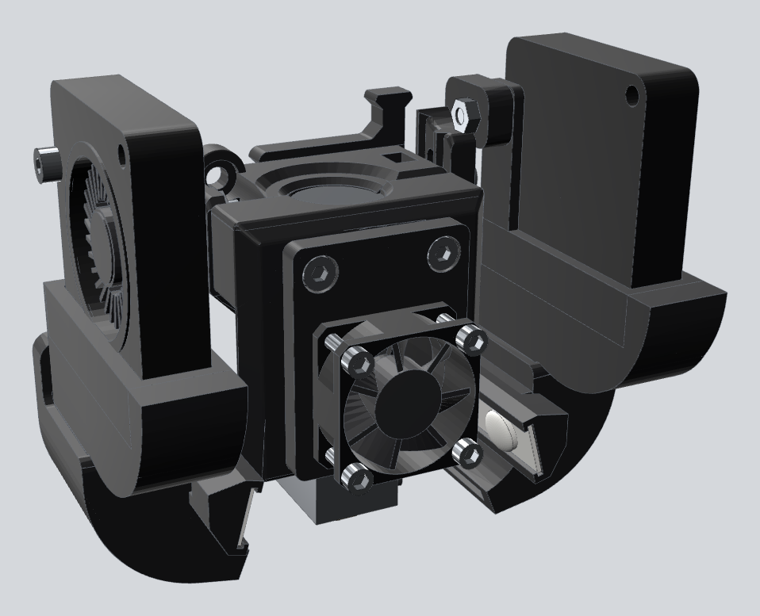
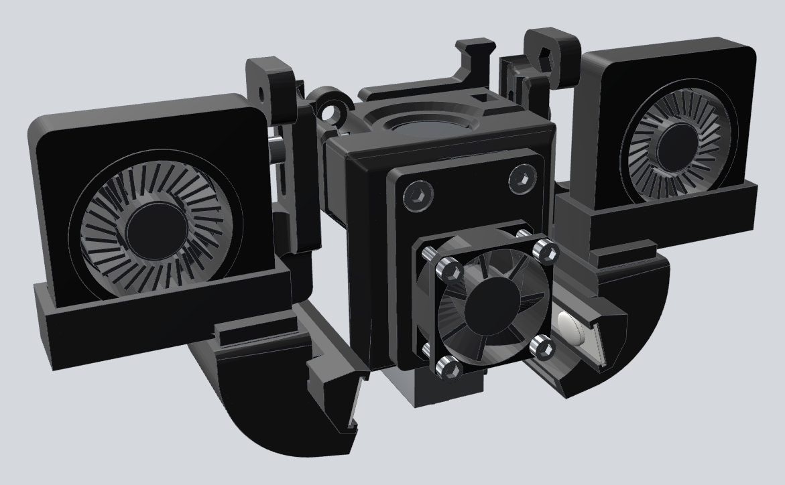

Printed and running on an Anet ET4: the 4010 blowers on the original ducts, the 2510 hotend fan on the front clamp
and the LEDs lighting the nozzle.
What this remix adds
4010 adapter to fit the Ender 3's stock 4010 blowers to the original 5015 ducts, in two versions:
normal (the blower in the original position, held by its mounting screw) and flat
(the blower on top with its intake facing the front, like the hotend fan; the adapter is only 15 mm tall, so the blowers sit low).
LED mount that fits on the inside of each original duct, held with a zip tie, and aims two LEDs of a
24 V LED strip with one lensed LED per segment, like the light strips sold for the Bambu Lab A1, at the nozzle.
One-piece duct with the 4010 adapter and the LED channel built in, in both versions, if you prefer to reprint the ducts.
25 → 30 mm fan adapter so the 2510 hotend fan of an Anycubic Kobra X fits Locos3D's 30 mm fan clamp.

Normal

Flat
Downloads
All files are oriented for printing. Right and left parts are mirror images. To enter your own
measurements (fan, LED strip, clearances) use the part generator.
LEDs: on this kind of strip each LED is its own segment. Cut it at the marks, two LEDs per side, and wire both pieces in parallel to 24 V.
2510 fan adapter: it is held by the clamp's own two M3 screws, which need to be about 4 mm longer, and the fan is fixed with 4 self-tapping M2.5 screws.